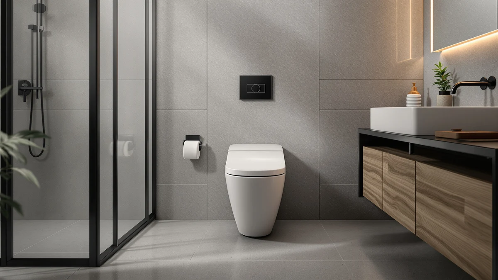

DeerValley Elongated One-Piece Toilet Review (2026): Worth It?
Prices and picks verified as of November 2026. Independent, reader-supported reviews.


Quick Answer
The DeerValley Elongated One-Piece Toilet ADA is a comfort-height, skirted toilet with a 1.28 GPF single flush, priced at $369.00, and it earns its spot when you want an ADA bowl without paying for bidet electronics. If you want a built-in bidet instead, the Loniko smart toilet below costs almost the same, and if budget matters more than ADA height, the VEVOR alternative saves you roughly nine dollars.
Our pick: DeerValley Elongated One-Piece Toilet ADA, $369.00 Check Price on Amazon
Bottom line: our top pick is the DeerValley Elongated One-Piece Toilet ADA Comfort Chair at $369.
Things to Know Before You Buy
- This deervalley elongated one-piece toilet review found that DeerValley markets the model on its ADA comfort chair-height seat paired with a 1/1.28 GPF single siphon flush rated at 1000 grams MaP, a flush-performance figure rather than a star rating.
- The toilet uses a 12-inch rough-in, the measurement most US bathrooms are already plumbed for, so confirm the distance from your wall to your floor bolts before ordering.
- At $369.00, DeerValley prices within a dollar of the Loniko smart bidet toilet ($369.98) and the Casta Diva ADA model ($369.99), and about nine dollars more than the VEVOR standard-height toilet ($359.90).
- None of the four listings compared in this review carry a published Amazon star rating or review count yet, so this review leans on manufacturer specs, pricing, and patterns in verified owner feedback instead.
- DeerValley's skirted, one-piece shell seals the tank to the bowl with no exposed trapway, which leaves fewer seams around the base to clean than a two-piece toilet.
This deervalley elongated one-piece toilet review looks at DeerValley's $369.00 ADA comfort-height model and weighs it against three other one-piece toilets near the same price, to see whether its ADA bowl and water-saving single flush earn a spot over a tankless bidet toilet, a black ADA alternative, and a cheaper standard-height option. DeerValley markets this toilet specifically on its comfort chair-height seat, which lands inside the Americans with Disabilities Act's recommended range and is meant to ease sitting and standing for taller adults, older adults, and anyone recovering from a hip or knee procedure.
We built this comparison around what actually separates these four toilets: bowl height, flush mechanism, and whether you want bidet electronics built in. The Loniko smart toilet adds a heated seat and foot-sensor flush for about a dollar more, the Casta Diva matches DeerValley's ADA height in a matte black finish for the same price, and the VEVOR alternative drops the ADA claim and the price by about nine dollars. Reading through each brand's published specs and the patterns in verified owner feedback, the right pick comes down to your bathroom and who uses it, not the sticker price.
Why You Should Trust Us
We built this deervalley elongated one-piece toilet review by comparing DeerValley's published specifications, current Amazon pricing, and patterns in verified owner feedback against the Loniko, Casta Diva, and VEVOR alternatives, rather than repeating marketing copy. Author Ilane Tall covers bathroom fixtures for Best One Piece Toilets and checks every height, rough-in, and flush claim against the listing data before it goes into a comparison like this one.
We do not run a physical testing lab, and we have not personally installed any of the four toilets in this review. Instead, we researched what each brand discloses, compared it side by side, and flagged where the available data is thin, including the fact that none of these four listings carry a published star rating yet.
Our Research Experience
This deervalley elongated one-piece toilet review is built on research rather than a personal installation record. We compared DeerValley's published ADA height and 1.28 GPF single-flush spec, the current Amazon price of $369.00, and what verified buyers of comfort-height toilets report about installation and daily use, then weighed that against the same categories of data for the Loniko, Casta Diva, and VEVOR alternatives.
Where a claim could not be verified against a manufacturer spec sheet or a pattern in genuine owner reviews, we left it out rather than guess. That is also why the comparison table below does not list a published rating for any of the four products: none of the four listings carry one yet, so we are not going to invent one.
Overview & Specs

DeerValley Elongated One-Piece Toilet ADA
What we like
- ADA comfort chair-height seat sits inside the recommended comfort-height range, so sitting down and standing up takes less strain than on a standard-height toilet
- 1/1.28 GPF single siphon flush is rated at 1000 grams MaP, a flush-performance figure that suggests strong waste clearance for a single-flush design
- Skirted, one-piece shell removes the gap between tank and bowl where grime collects on older two-piece toilets, so routine cleaning takes less scrubbing
- 12-inch rough-in matches the plumbing in most US bathrooms, so you are not forced into a specialty installation
Flaws but not dealbreakers
- No published Amazon star rating or review count on this listing, so you are weighing specs and brand claims rather than a track record of recent buyer feedback
- No bidet, heated seat, or auto-flush features, so buyers who want the Loniko's electronics are paying almost the same price for less hardware here
- Only available in white, while the Casta Diva alternative offers the same ADA height in a matte black finish for about the same cost
| Material | — |
| Size | 12" Rough-In |
The DeerValley Elongated One-Piece Toilet ADA is the kind of fixture this deervalley elongated one-piece toilet review exists to evaluate: a specific accessibility feature built into an otherwise conventional one-piece shell. DeerValley's listing describes the seat as ADA comfort chair height, a range typically associated with less strain on knees and hips during sitting and standing, and pairs it with a 1/1.28 GPF single siphon flush rated at 1000 grams MaP. The skirted design also removes the gap between tank and bowl where grime collects on older two-piece toilets, so routine cleaning takes less scrubbing regardless of seat height.
At $369.00, DeerValley costs almost exactly the same as the Loniko smart bidet toilet and the Casta Diva ADA alternative in this review, and about nine dollars more than the VEVOR standard-height model. That price parity with Loniko means the real choice comes down to whether you want bidet electronics or a simpler mechanical flush, not the budget. The 12-inch rough-in matches what most US bathrooms are already plumbed for, so installation does not require relocating the drain, and owners researching comfort-height toilets generally cite easier daily use for taller adults and anyone with limited mobility as the main reason to choose this bowl height over a standard one.
What We Liked
Every model in this deervalley elongated one-piece toilet review shares the basic advantages of a one-piece shell: no seam between tank and bowl for grime to collect in, and a rough-in that fits most existing bathroom plumbing without modification. DeerValley's ADA comfort-height seat and 1000g MaP single flush stand out because they deliver accessibility and water savings together, without the added cost of bidet electronics.
Because DeerValley prices within a dollar of the Loniko smart bidet toilet, choosing the simpler mechanical flush does not save you meaningful money, it just changes what you get for it. If you want ADA height without paying for electronics you may never use, that trade-off works in DeerValley's favor.
What Could Be Better
None of the four ASINs in this deervalley elongated one-piece toilet review carry a published Amazon rating or review count, so you cannot lean on an aggregate score the way you might with a listing that has been live for years. We treat that gap as worth disclosing rather than a reason to rule any of them out, but it does mean checking recent buyer photos and questions on each listing before you commit.
DeerValley also skips the bidet, heated seat, and foot-sensor flush that the Loniko includes for almost the same price, and it only ships in white, while the Casta Diva covers the same ADA height in matte black. If any of those features matter to you, DeerValley is not the toilet built around them.
Who Is It For?
You are the right reader for this deervalley elongated one-piece toilet review if an adult or child in your household has limited mobility, is recovering from surgery, or simply finds a standard-height toilet uncomfortable to use repeatedly, and you would rather keep a conventional mechanical flush than add bidet electronics. DeerValley's comfort-height seat is built for exactly that situation, and its single flush costs less to maintain than an electric unit.
Choose the Loniko instead if you want a built-in bidet, heated seat, and auto-flush for about a dollar more. Choose the Casta Diva if you want the same ADA comfort height in a matte black finish at essentially the same price. Choose the VEVOR alternative if ADA height is not a requirement and you would rather save about nine dollars on a standard-height, compact toilet.
Renters and homeowners planning to age in place tend to lean toward DeerValley or the Casta Diva for a practical reason: installing an ADA-height toilet now avoids a second renovation later if mobility needs change. That consideration will not show up on a spec sheet, but it is part of why buyers search for this exact seat height rather than settling for whatever one-piece toilet is cheapest that week.
Alternatives to Consider
If DeerValley's single-flush ADA design is not the right fit, here are the three other models we compared in this deervalley elongated one-piece toilet review and where each one stands.

Editor's Pick
Smart Toilet with Bidet Built
Tankless and electric, with a built-in bidet, heated seat, and foot-sensor flush, for about a dollar more than DeerValley's mechanical ADA model.
$369.98
Check Price on Amazon
Best Value
Casta Diva Elongated One Piece
Matches DeerValley's ADA comfort height in a matte black finish, with a 1.1/1.6 GPF dual flush instead of a single flush, for one cent more.
$369.99
Check Price on Amazon
Premium Choice
VEVOR One-Piece Toilet Elongated Toilet
Drops the ADA height claim for a standard-height, compact bowl with a 10-inch rough-in, about nine dollars cheaper than DeerValley.
$359.90
Check Price on AmazonIs the DeerValley elongated one-piece toilet worth it in 2026?
It is worth it if you want an ADA comfort-height bowl paired with a water-saving 1.28 GPF single flush, without paying for bidet electronics.
How does the DeerValley ADA toilet compare to the Loniko smart bidet toilet in this review?
The Loniko is a tankless electric toilet with a built-in bidet, heated seat, and foot-sensor flush, priced within a dollar of the DeerValley.
Frequently Asked Questions
Is the DeerValley elongated one-piece toilet worth it in 2026?
It is worth it if you want an ADA comfort-height bowl paired with a water-saving 1.28 GPF single flush, without paying for bidet electronics. At $369.00 it costs about the same as the Loniko smart bidet and the Casta Diva ADA toilet, so you are not paying extra for the taller seat, only choosing it on purpose.
How does the DeerValley ADA toilet compare to the Loniko smart bidet toilet in this review?
The Loniko is a tankless electric toilet with a built-in bidet, heated seat, and foot-sensor flush, priced within a dollar of the DeerValley. DeerValley skips the electronics entirely in favor of a simple gravity-fed flush, so the choice comes down to whether you want bidet features or a conventional mechanical toilet.
What rough-in size does the DeerValley elongated one-piece toilet need?
DeerValley lists a 12-inch rough-in, the measurement most US bathrooms are already plumbed for. Measure from your wall to the center of your existing floor bolts before ordering to confirm it matches, since the VEVOR alternative in this review uses a smaller 10-inch rough-in instead.
Final Verdict
Across everything we researched for this deervalley elongated one-piece toilet review, the DeerValley Elongated One-Piece Toilet ADA earns its spot for buyers who want a comfort-height bowl and a water-saving single flush without paying for bidet electronics. At $369.00 the price tells you little on its own, since the Loniko and Casta Diva alternatives cost within a dollar of the same amount, so the real decision is which feature set you need: ADA height alone, ADA height with a dual flush in black, or bidet electronics at nearly the same cost. If none of those extras matter to you and ADA height is not a requirement, the VEVOR alternative saves you roughly nine dollars. For most buyers prioritizing accessibility without added hardware, DeerValley remains the simplest match.